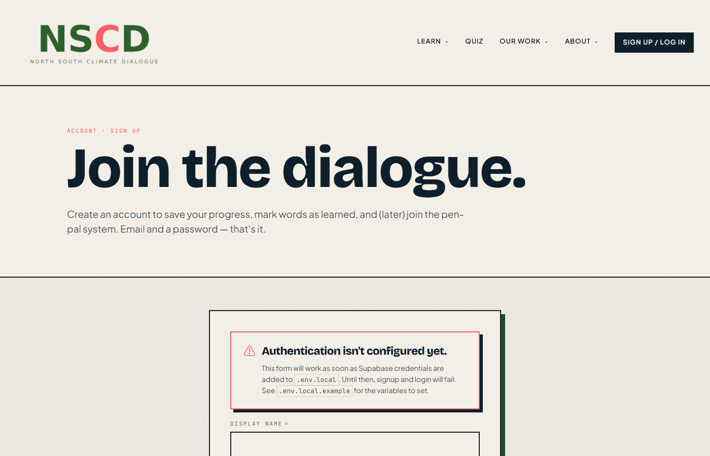
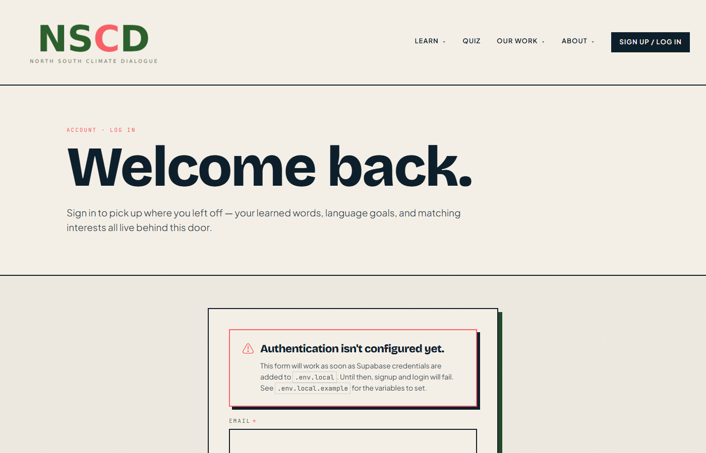
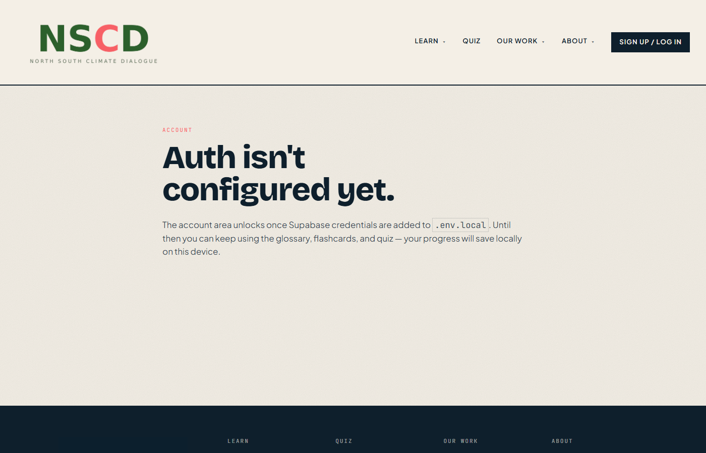

Sign up, sign in, dashboard.
Supabase auth via @supabase/ssr. Email confirmation
required. The four /account/* pages are guarded — they
redirect to /login when signed out, or show a friendly "Auth isn't
configured yet" notice when env vars are missing.
Today the project has no Supabase keys yet, so every
/account/* route renders the placeholder "Auth isn't
configured yet" panel. The page UIs themselves
(Profile, Goals, Progress, Matching) are fully built — they unlock
the moment .env.local is filled in. Each card below
describes what the page does once it's live; the GitHub link goes
to the actual source.

Sign up
/signupName · email · password · confirm. Validation runs locally before submit. Success state shows a "Check your email" card.
- 4 fields · client validation · loading state
- Confirmation-required flow
- Inline "auth not configured" warning when env missing

Log in
/login
Email + password. Honors ?next= for return-to URL.
After sign-in the navbar swaps to a "Hi, [name] ▾" dropdown.
- Same form aesthetic as signup
- Redirects respect protected-route deep links

Account dashboard
/account"Hi, [name]." headline · sticky identity card with log-out · four tiles linking to Profile / Goals / Progress / Matching.
- Server-rendered greeting from user metadata
- Log out via server action
- Coral-accent Matching tile

Profile
/account/profile
Editable: display name, bio (500 char with live counter), native
language, what you're practicing, location. Saves to Supabase
user_metadata. "✓ Saved" flashes after submit.
- 5 fields · pre-filled from user metadata
- Initials avatar derived from name
- Navbar refreshes on save (router.refresh)

Language goals
/account/goalsWeekly target picker (5/10/20/30). Live stat card with this week's count + streak + target, rendered from localStorage timestamps.
- Streak counter (consecutive-day calculation)
- "This week" rolling 7-day count
- Animated coral progress bar against target

Progress
/account/progress
The visualization page. Big X / 149 stat, a heat-grid
of all 149 terms (click → glossary side panel), per-category
progress bars, last-10 recent activity feed, confirm-protected
Reset button.
- 149-tile heat-grid · grouped by category
- Per-category bars sorted by completion
- Relative-time recent activity
- Reset · confirmation prompt

Matching
/account/matching
Pen-pal interest form. Availability · neighborhood · topics ·
about (500-char) · open-to-matching. Stored in
user_metadata.matching for now; easy to migrate to
a Supabase table later.
- Multi-select tiles (availability + 7 topic options)
- Open-to-match radio: Yes / Maybe / No
- Disclaimer: organizers pair manually, no algorithm